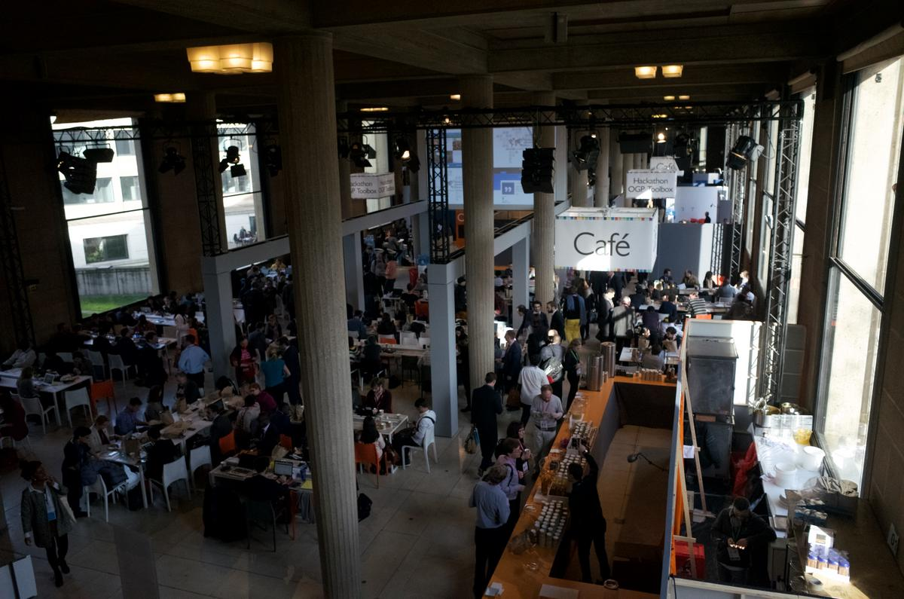

OPG Toolbox Hackathon 分享
@pm5
OPG Toolbox Hackathon 分享
@pm5

Open Contracting Toolbox
- Ukraine、Mexico City 等國家與城市相繼採用。
- OGP 的 Paris Declaration 裡列入了開放政府採購。
- 英國 Open Standards Board 開始採用 OCDS 與 IATI（International Aid Transparency Initiative）
- 智庫驅動
後續
- 資料格式標準、best practice
- 不同專案的串連
- 對 OGP 這套作法的修正與改善